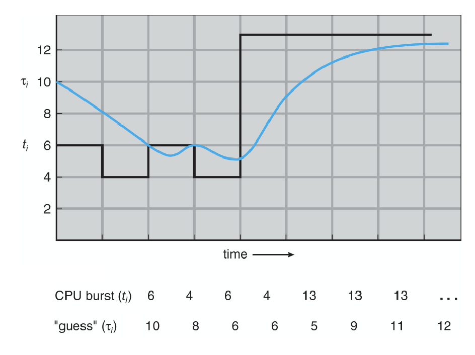

Pretty straightforwad, sum up the waiting time for a process and then divide by the number of processes...
The concept of predicting burst times revolves around estimating when a CPU will experience a 'burst' or surge in activity.
It's often impossible to know the exact burst times in advance. However, by making accurate predictions, we can optimize CPU scheduling and enhance system performance. These predictions are typically based on the history of previous bursts.
One of the common methods to predict burst times is using an exponential average. The formula is as follows:
The graph depicts the CPU burst times (ti) and their respective predictions (τi). The 'guess' line shows the predicted burst times while the CPU burst line showcases the actual burst times.
The Process Precedence Graphs (PPG) represent the orderly execution of bursts and critical sections. They address the fundamental problem of process synchronization which is defined by precedence relationships.
CoBegin and CoEnd.
A ;
CoBegin
ParBegin
B, C, D
ParEnd
E ;
In the provided graph, process A must finish before B, C, or D can begin. After B, C, and D are completed, process E can then commence. The lower graph indicates an exercise that might involve the relationships among processes P1, P2, P3, and P4.
Exercise: Users are encouraged to write the code representation for the depicted graph.